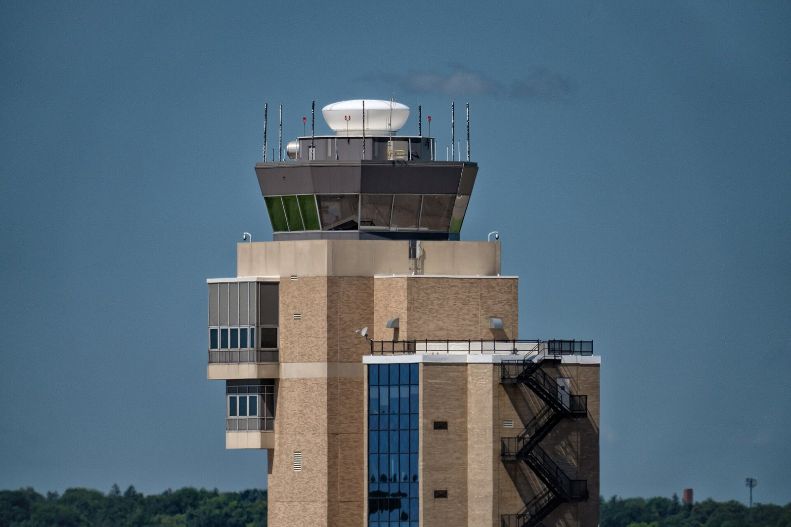

Voli bloccati negli USA per oltre quattro ore: le cause e gli scenari per i mercati
Venerdì sera gli Stati Uniti hanno fermato tutti i decolli per più di quattro ore: non accadeva per così tanto tempo dall'11 settembre 2001. La causa indicata è un guasto alla rete di telecomunicazioni del controllo aereo. Wall Street ha avuto sei minuti per reagire: il vero giudizio arriva lunedì.

In sintesi
- Decolli fermi negli USA dalle 15:54 alle 20:15 di venerdì 13 novembre (ora di New York): è il blocco più lungo dal 2001.
- Oltre 9.000 voli cancellati venerdì e più di 4.000 sabato; circa 1,5 milioni di passeggeri coinvolti.
- Causa indicata: un router andato in sovraccarico durante lavori sulla rete. Le autorità escludono, per ora, un attacco informatico.
- Dopo la chiusura: Delta −2,4%, United −1,9%, American −1,8%, Southwest −1,3%; L3Harris −4,2%.
- Quattro scenari, dal guasto isolato alla fragilità della rete: il primo test è l'apertura di lunedì 16 novembre.
Venerdì 13 novembre, alle 15:54 di New York (le 21:54 in Italia), la FAA, l'agenzia federale americana per l'aviazione civile, ha fermato tutti i decolli negli Stati Uniti. Il blocco è stato revocato alle 20:15: circa quattro ore e venti minuti, il più lungo dall'11 settembre 2001. Nella sola giornata di venerdì sono stati cancellati oltre 9.000 voli. La causa indicata dalle autorità è un guasto alla rete di telecomunicazioni del controllo del traffico aereo. Wall Street chiudeva sei minuti dopo l'inizio del blocco: la reazione si è vista nelle contrattazioni serali, con le compagnie aeree in calo fra l'1,3% e il 2,4%.
Che cosa è successo
| Voce | Dato | Fonte |
|---|---|---|
| Inizio del blocco | venerdì 13 novembre, 15:54 di New York | FAA |
| Revoca | 20:15 di New York (le 2:15 di sabato in Italia) | FAA |
| Voli cancellati venerdì | oltre 9.100 | FlightAware |
| di cui American / Southwest / Delta / United | 1.239 / 1.167 / 1.162 / 1.137 | FlightAware |
| Voli dirottati entro le 19:05 | almeno 827 | Cirium |
| Passeggeri con voli in partenza dopo le 16 | oltre 1,5 milioni | Cirium |
| Voli cancellati sabato | più di 4.000 | CNN |
Gli aerei già in volo, circa 3.500 secondo il ministro dei Trasporti Sean Duffy, hanno proseguito e sono atterrati regolarmente; a restare a terra sono stati quelli non ancora decollati. La FAA ha chiesto di sospendere anche le partenze dall'estero verso gli Stati Uniti. Sabato il sistema è tornato operativo, ma le cancellazioni sono continuate: aerei ed equipaggi erano negli aeroporti sbagliati. Il capo della FAA, Bryan Bedford, ha previsto per la giornata fra 4.000 e 5.000 cancellazioni su circa 41.000 voli in programma. Secondo ANSA, fra venerdì e sabato i voli annullati hanno superato quota 16.000; i conteggi cambiano da fonte a fonte e sono ancora in aggiornamento.
💡 Impara: che cos'è un ground stop
Un ground stop (blocco a terra) è l'ordine con cui l'autorità dell'aviazione vieta i decolli verso un aeroporto o un'area. Di solito è locale e dura poco: un temporale, una pista chiusa. Quello nazionale è rarissimo, perché ferma tutto il Paese: prima di venerdì era successo dopo gli attentati dell'11 settembre 2001 e l'11 gennaio 2023, per meno di due ore, quando si guastò il sistema che invia gli avvisi di sicurezza ai piloti. Gli aerei in volo non vengono fatti scendere: semplicemente non ne partono altri.
Le cause: che cosa si sa e che cosa no
La versione ufficiale è questa. Una squadra di L3Harris, la società che gestisce la rete di telecomunicazioni della FAA, stava passando un sito dai vecchi cavi in rame alla fibra ottica. Intorno alle 15:36 un router (l'apparecchio che smista i dati in una rete) ha cominciato a «inondare» gli altri: più di mille tentativi di connessione ogni quattro o cinque secondi, ha spiegato Duffy. I centri di controllo hanno iniziato a ricevere dati radar e radio intermittenti e la FAA ha fermato i decolli per prudenza. Non si sa ancora se sia stato un errore della squadra o un apparecchio difettoso.
Tre punti restano aperti:
L'attacco informatico. FBI, ministero della Sicurezza interna e FAA lo escludono: Bedford ha parlato di «zero prove di qualcosa di doloso». L'indagine però non è conclusa.
Il nuovo sistema di intelligenza artificiale. Tre giorni prima, il 10 novembre, la FAA aveva esteso a tutti i centri di controllo SMART, un software di Air Space Intelligence che propone come distribuire il traffico: un contratto da 875 milioni di dollari in dodici anni. Duffy ha detto che «non c'è modo» che abbia inciso; il ministro della Sicurezza interna, Markwayne Mullin, ha risposto che «non si può escludere nulla». La società nega ogni legame.
La fragilità della rete. Duffy ha parlato di linee in rame «degli anni Ottanta». Un rapporto dell'organo di controllo del Congresso (GAO) aveva già segnalato che la FAA stava accelerando la sostituzione degli impianti senza coordinare bene i passaggi. E c'è un precedente: nel 2009 un tecnico della stessa società, allora Harris, configurò male un router durante uno spostamento su fibra e mise in difficoltà 129 strutture della FAA.
La reazione dei mercati, finora
| Titolo | Chiusura 13 nov | Seduta di venerdì | Dopo la chiusura | Da inizio anno |
|---|---|---|---|---|
| Delta Air Lines | 86,25 $ | −0,35% | −2,4% | +24,3% |
| United Airlines | 109,31 $ | −1,74% | −1,9% | −2,2% |
| American Airlines | 13,17 $ | −1,05% | −1,8% | −14,1% |
| Southwest Airlines | 44,94 $ | −0,64% | −1,3% | +8,7% |
| L3Harris (rete della FAA) | 272,35 $ | +0,19% | −4,2% | −7,2% |
Il blocco è scattato sei minuti prima della campanella: la seduta ordinaria ne ha risentito poco. Il segnale è arrivato dopo. Nelle contrattazioni serali le quattro maggiori compagnie hanno perso fra l'1,3% e il 2,4%, e L3Harris il 4,2%, a 261 dollari, dopo che Duffy l'ha indicata come la società al lavoro sulla rete. Sono cali contenuti, ma vanno letti con cautela: di sera gli scambi sono pochi e i prezzi poco affidabili. Le compagnie europee con molte rotte verso gli Stati Uniti (Lufthansa, IAG, Air France-KLM) avevano già chiuso, tutte in rialzo e con una settimana da +4% a +6%: per loro il giudizio arriva lunedì.
💡 Impara: le contrattazioni after-hours
L'after-hours trading (contrattazioni dopo la chiusura) è la fascia in cui le azioni americane continuano a essere scambiate dopo le 16 di New York, fino alle 20. Serve a reagire alle notizie che escono a mercati chiusi, come i conti trimestrali. Ha però un limite: gli scambi sono pochi e basta un ordine di medie dimensioni per muovere il prezzo. Per questo una variazione serale è un indizio, non un verdetto: il prezzo «vero» si forma alla riapertura, quando tornano tutti gli investitori.
I precedenti: quanto costa fermare gli aerei
| Episodio | Che cosa accadde | Effetto sui titoli |
|---|---|---|
| 11 settembre 2001 | Spazio aereo chiuso per giorni dopo gli attentati | Alla riapertura della Borsa: Delta −44%, United −42%, American −39%, Southwest −24% |
| 11 gennaio 2023 | Guasto al sistema di avvisi ai piloti: blocco di meno di due ore, oltre 1.300 voli cancellati | Nessuno: quel giorno United salì del 4,28% e Delta dello 0,24% |
| Luglio 2024 | Guasto informatico mondiale (CrowdStrike): Delta cancellò circa 7.000 voli in cinque giorni | Costo per Delta: circa 550 milioni di dollari |
I precedenti dicono due cose. La prima: i mercati distinguono fra un guasto tecnico e una minaccia. Nel 2001 i titoli crollarono perché si temeva che la gente smettesse di volare; nel 2023 non successe nulla. La seconda: il costo non dipende dalla durata del blocco, ma dalla velocità con cui una compagnia rimette a posto aerei ed equipaggi. Nel 2024 il guasto durò poche ore per quasi tutti, ma Delta impiegò cinque giorni a ripartire e pagò 550 milioni fra rimborsi e costi. Per l'episodio di venerdì non esiste ancora una stima ufficiale: un sito specializzato, ThePricer, ha calcolato con un modello una forbice fra 122 e 387 milioni di dollari per l'insieme delle compagnie. È un esercizio teorico, non un dato.
Quattro scenari per i mercati
| Scenario | Che cosa lo confermerebbe | Chi ne risente | Effetto possibile |
|---|---|---|---|
| 1. Guasto isolato | L'indagine conferma il router o l'errore umano; voli regolari in pochi giorni | L3Harris; le compagnie più lente a ripartire | Limitato e breve, come nel 2023 |
| 2. Rete fragile | Nuovi guasti, o la FAA riduce il traffico durante i lavori | Tutte le compagnie, a ridosso del Ringraziamento | Tagli alle previsioni del trimestre; più spesa pubblica per la rete |
| 3. Legame con l'AI | Gli investigatori collegano il guasto al nuovo software | Il programma di modernizzazione; il clima sull'intelligenza artificiale | Sospensione del sistema, scontro politico |
| 4. Attacco informatico | Oggi è escluso dalle autorità | L'intero mercato | Fuga dal rischio; in rialzo sicurezza informatica e difesa |
Scenario 1: guasto isolato. È quello che le autorità descrivono. Se regge, il danno per le compagnie è nell'ordine delle centinaia di milioni e si esaurisce in un trimestre. A pagare sarebbe soprattutto chi ha materialmente causato il guasto, sul piano dei contratti e della reputazione.
Scenario 2: rete fragile. È il più rilevante per chi investe. La sostituzione del rame con la fibra è appena cominciata: se ogni passaggio comporta un rischio, la FAA potrebbe rallentare il traffico per precauzione proprio mentre si avvicina il Ringraziamento (26 novembre), il periodo di maggior traffico dell'anno. Meno voli significa meno ricavi e previsioni da rivedere. Sull'altro piatto c'è la spesa pubblica: il Congresso ha già stanziato 12,5 miliardi di dollari in cinque anni, la Casa Bianca ne aveva chiesti 30 e Duffy ora ne chiede 50. Ne beneficerebbe chi costruirà la nuova rete, affidata ad agosto ad AT&T. Sono però altri soldi da prendere a prestito con il Treasury a 10 anni al 5,15%.
Scenario 3: legame con l'intelligenza artificiale. Per ora è un'ipotesi che il ministro competente respinge. Se emergesse un nesso, l'effetto diretto in Borsa sarebbe piccolo, perché Air Space Intelligence non è quotata. Quello indiretto no: il 9 ottobre alcuni parlamentari democratici avevano chiesto di sospendere il sistema, e un incidente attribuito all'AI in un'infrastruttura critica arriverebbe nella settimana in cui i titoli dell'intelligenza artificiale sono già sotto pressione.
Scenario 4: attacco informatico. Lo citiamo per completezza: FBI e ministero della Sicurezza interna lo escludono. Se le indagini cambiassero versione, non sarebbe più una storia di compagnie aeree ma di sicurezza nazionale, con una reazione di risk-off (fuga dalle attività rischiose) su tutto il listino.
L'Italia e chi viaggia
Quando è scattato il blocco, quattro voli partiti da Roma Fiumicino erano in viaggio verso gli Stati Uniti e hanno proseguito. Sabato a Fiumicino i collegamenti sono ripresi con ritardi fino a oltre due ore; a Milano Malpensa tre dei dieci voli previsti per gli Stati Uniti sono stati cancellati. Negli Stati Uniti le compagnie non sono tenute a pagare alberghi e pasti, perché il blocco è dipeso dalla FAA; devono però offrire il rimborso o una nuova prenotazione a chi ha avuto il volo cancellato, e le maggiori hanno eliminato le penali di cambio per i viaggi di questi giorni. Chi parte dall'Europa deve rivolgersi alla propria compagnia.
Cosa guardare ora
Lunedì 16 novembre la riapertura di Wall Street darà il primo prezzo vero ai titoli coinvolti. Poi tre cose: l'esito dell'indagine sul router, che decide fra il primo e il secondo scenario; le comunicazioni delle compagnie sui costi e sulle previsioni del trimestre; la risposta del Congresso alla richiesta di 50 miliardi. E il calendario: mancano dodici giorni al Ringraziamento. Duffy ha promesso che per allora il sistema sarà a regime.
Nota metodologica: orari e cause sono quelli comunicati dalla FAA e dal ministro dei Trasporti, riportati da Al Jazeera, NBC News, ANSA e 24/7 Wall St. Le fonti non concordano su alcuni orari (il ministro ha indicato le 15:36 come inizio dei problemi, la FAA le 15:54 come inizio del blocco) né sul numero dei voli cancellati, ancora in aggiornamento: indichiamo la fonte di ogni cifra. Le chiusure di venerdì e le variazioni da inizio anno sono calcolate sui dati di Yahoo Finance; le variazioni dopo la chiusura sono quelle riportate da 24/7 Wall St. e differiscono di qualche decimo in altre rilevazioni. I precedenti del 2001 e del 2023 sono riportati da SimianX, il costo per Delta nel 2024 da NBC News e CNBC. Gli scenari sono un esercizio di analisi, non una previsione né un consiglio di investimento.